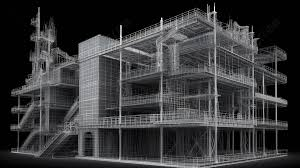
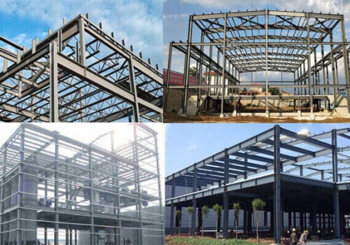
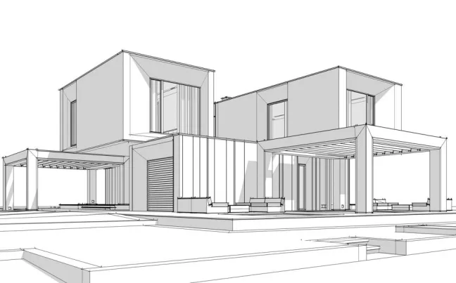
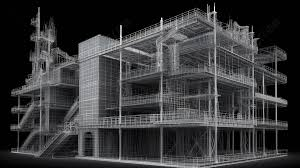
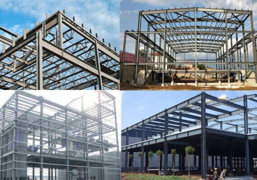
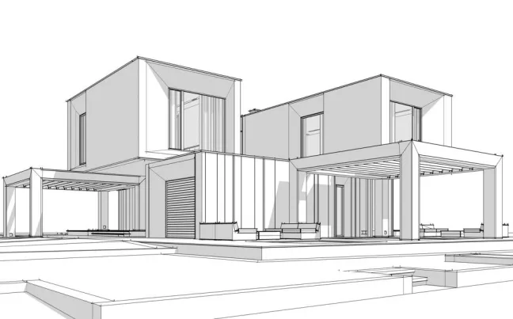

Welcome to Architecture
Architecture: Role, Importance, and Key Elements
Introduction Architecture is the art and science of designing and constructing buildings and other physical structures. It plays a fundamental role in shaping the environment we live in, blending functionality, aesthetics, and sustainability to create spaces that serve various human needs.
Importance of Architecture
--> Enhancing Functionality: Ensures buildings meet their intended use efficiently.
--> Aesthetic Appeal: Creates visually pleasing and inspiring environments.
--> sustainability: Incorporates eco-friendly designs to reduce environmental impact.
--> Cultural Representation: Reflects history, traditions, and identity through design.
--> Structural Safety: Ensures buildings are durable and resilient against natural disasters
Roles of Architects
--> Designing structures that balance form and function.
--> Collaborating with engineers, contractors, and city planners.
--> Ensuring compliance with zoning laws and building codes.
--> Implementing sustainable and energy-efficient practices.
--> Overseeing construction projects from concept to completion.